Replacing the Syringes
This topic includes information about how to replace the syringes.
Safety Reminder
Servicing the DxI 9000 instrument involves potential risks for pinch and puncture, electrical shock, and exposure to hazardous materials. You must mitigate these risks by taking appropriate countermeasures. See Safety for more information.
| Table of Contents |
|---|
| Components |
| Removing the Syringes from the Pump Assembly |
| Installing Syringes into the Pump Assembly |
Components
This procedure applies to the following parts:
- Low resolution syringe and hi-resolution syringe for reagent dispense1 subunit
- Low resolution syringe and hi-resolution syringe for reagent dispense2 subunit
- Low resolution syringe for assay wash dispense subunit
- Glass syringe for substrate dispense subunit
Note: See the DxI 9000 Parts List for parts numbers.
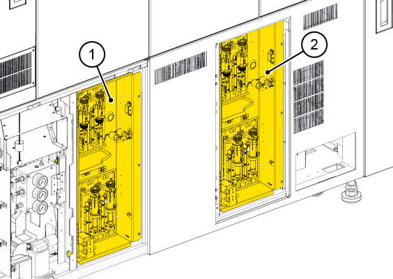
| 1 | Reagent dispense 2 subunit |
| 2 | Reagent dispense 1 subunit |
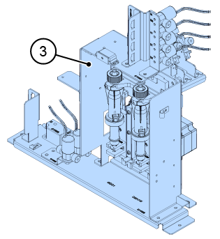
| 3 | Low resolution syringe (for assay wash dispense subunit) |
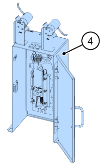
| 4 | Glass syringe (for substrate dispense subunit) |
Removing the Syringes from the Pump Assembly
Note: Put absorbent material under the syringes to catch fluid as it drains when you unscrew them.
- Unscrew each black tube fitting.
- Loosen the bottom screw.
- Pull the syringe straight out.
Installing Syringes into the Pump Assembly
- Mount the syringes into upper and lower mounting grooves.
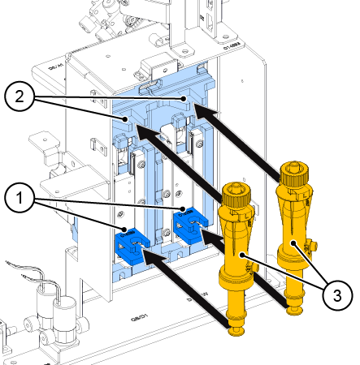
1 Lower mounting 2 Upper mounting 3 Syringes - Press the syringes into the dispensers until the syringes hit the back of the upper mounting grooves.
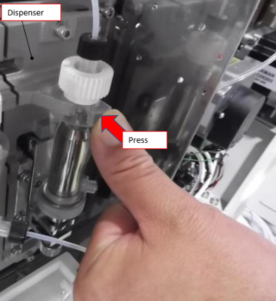
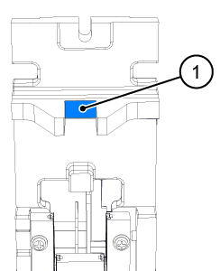
1 Back of upper mounting groove 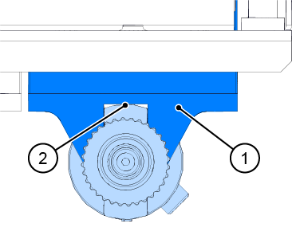
1 Upper mounting groove 2 Hit - Attach the tubing to the syringe as shown below:
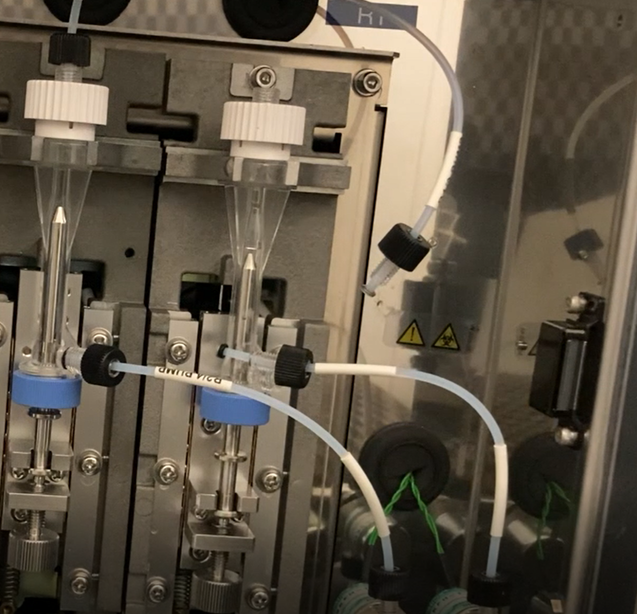
- While pressing the syringes into the dispensers, tighten the black and white nuts until they click.
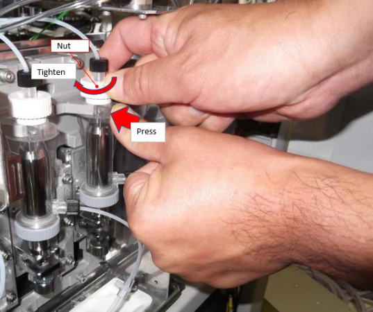
- Tighten R Screw by hand to immobilize the pistons.
Note: Some syringes come with an additional M6 nut that is used to ensure snugness. If the syringe has an additional M6 nut, make sure it is snug against the flange.Important: When tightening the screw, do not touch anything else.
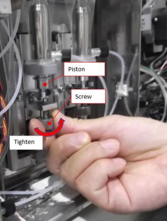
- Hold new E-ring with pliers
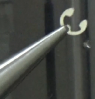
- While holding the ring with pliers, attach the ring to the groove of R Screw.
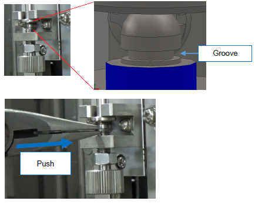
- Re-tighten R Screw by hand.
- Tighten the nut with 4-inch length adjustable wrench.
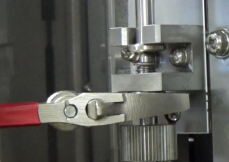
- Hold new E-ring with pliers
- Loosen the screws a little to free the pistons. This will eliminate any tilt the pistons have acquired because of the tightened screws.
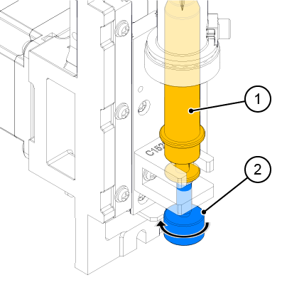
1 Piston 2 Screw (loosen 1/4 turn) - Tighten the screws again to immobilize the pistons.
- Prime the pipettors with 5 replicates.